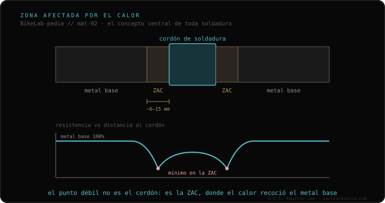

Cuando se suelda un tubo, el metal no cambia solo en el cordón. Alrededor hay una franja —la zona afectada por el calor (ZAC; en inglés HAZ)— donde el material llegó a temperatura suficiente para alterar sus propiedades sin fundirse. En esa franja se juega casi siempre el comportamiento de la unión. Por eso un cuadro a veces se rompe a unos milímetros AL LADO de la soldadura, no en el cordón: la ZAC es el punto débil. Cuánto se debilita y si se recupera depende del material.
Es el concepto del que cuelga todo lo demás cuando hablamos de soldar un cuadro. Entenderlo cambia cómo lees una fractura.
El cordón es la parte que se fundió y volvió a solidificar. Pero el calor no se detiene en el borde del cordón: se propaga hacia el metal base y crea un gradiente. Justo al lado hay una franja —de unos pocos milímetros— que nunca llegó a fundirse, pero sí alcanzó temperaturas altas. Ese paso por el calor reordena la estructura interna del metal: lo recoce, lo ablanda o le cambia las propiedades, según de qué esté hecho. Esa franja es la zona afectada por el calor. No la ves a simple vista, pero es donde se concentra la debilidad.
De ahí el dato práctico que más sorprende a quien rompe un cuadro: la fractura no aparece en el cordón, sino a su lado. El cordón, recién fundido y solidificado, suele quedar más resistente que la franja recocida que lo rodea. Cuando la unión cede, cede por el eslabón más débil, y ese eslabón es la ZAC.
Lo que ocurre en la ZAC no es universal: depende del material. El aluminio 6061 pierde su temple ahí y, para recuperarlo, necesita pasar por horno. El 7005 recupera al aire, solo, con el tiempo. El acero y el titanio se comportan de otra forma todavía. No hay una sola respuesta a "¿cuánto se debilita la ZAC?": la respuesta empieza por preguntar de qué está hecho el cuadro.

La ZAC es la puerta de entrada al resto del clúster. Cuánto se debilita y si se recupera depende de la aleación: ahí entra el aluminio 6061 vs 7005. Y como la franja debilitada es donde se acumula el daño con el uso, conecta directamente con la conversación con quien va a soldar —si el material lo exige, restituir la ZAC es uno de los pasos que conviene preguntar—.
Si ves una marca cerca de una soldadura y dudas de qué estás mirando, mándanos el caso. Te damos el idioma para entenderlo, sin venderte nada. Escríbenos por WhatsApp
Es la franja de metal que rodea el cordón de una soldadura. No se funde, pero llega a una temperatura suficiente para alterar sus propiedades. En esa franja se juega casi siempre el comportamiento de la unión, y por eso suele ser el punto débil.
Porque el punto más débil no es el cordón, sino la ZAC: la franja de unos milímetros junto al cordón donde el calor alteró el metal base sin fundirlo. Por eso muchas fracturas aparecen a milímetros al lado de la soldadura.
Depende del material. El aluminio 6061 pierde su temple ahí y necesita horno; el 7005 lo recupera al aire con el tiempo; el acero y el titanio se comportan de otra forma. No hay una respuesta única: depende de qué está hecho el cuadro.
© 2026 BikeLab Studio. Contenido bajo CC BY 4.0: puedes copiarlo, traducirlo y publicarlo, incluso con fines comerciales. La cita es obligatoria. Sin atribución, la licencia se revoca de forma automática (CC BY 4.0, §6.a) y el uso pasa a ser una infracción de derechos de autor: solicitamos la retirada del contenido y su desindexación. · Diseño y propiedad: Carlos Ravello Joo